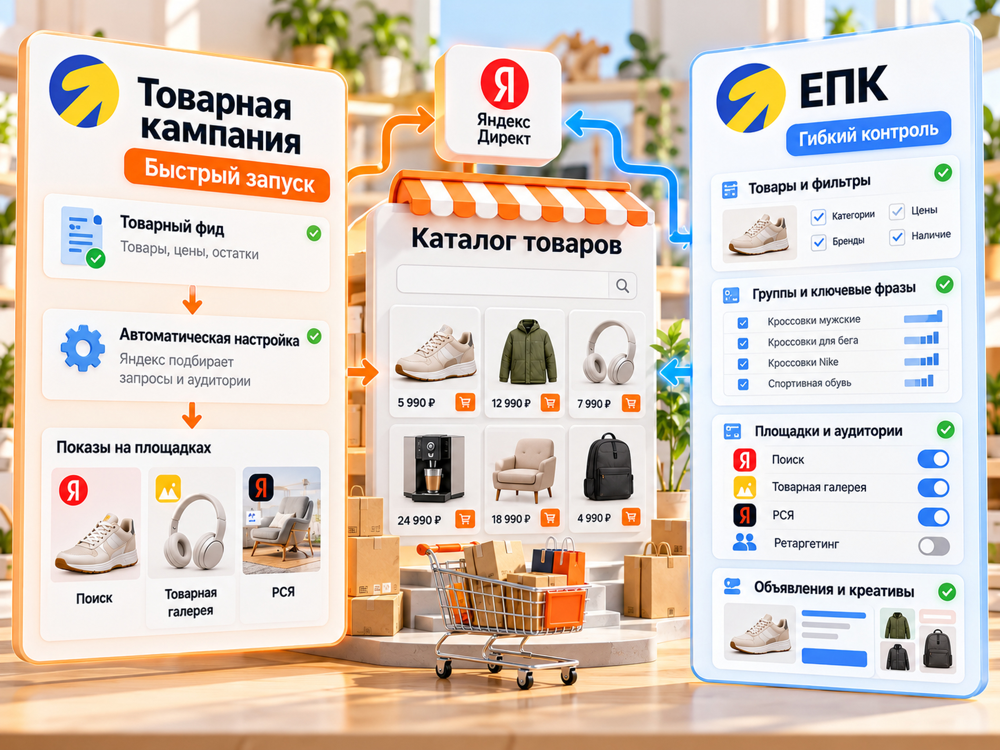
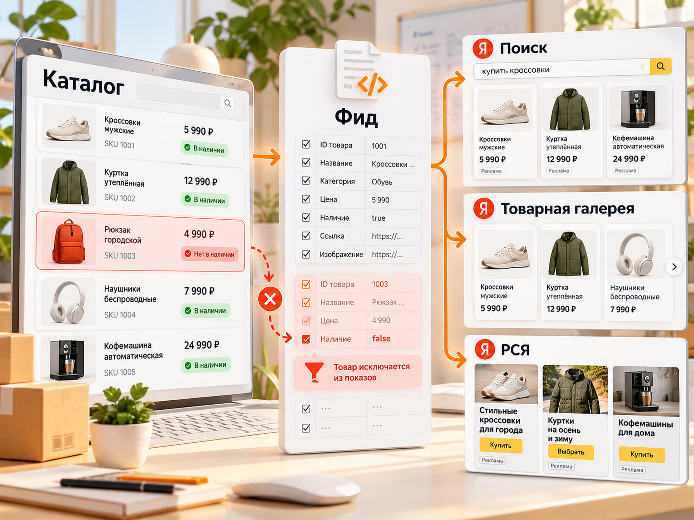

Блог о платном трафике
Реклама интернет-магазина в Яндексе: как получать продажи через Директ
Коротко: чтобы реклама интернет-магазина в Яндексе приносила продажи, нужно передать Директу актуальный ассортимент, настроить учёт заказов и заранее определить допустимую стоимость покупки. Товарная кампания помогает быстро запустить продвижение каталога, Единая перфоманс-кампания (ЕПК) даёт больше контроля над товарами, объявлениями и местами показа. Эффективность обоих форматов оценивают по заказам, выручке, CPO и ДРР, а не по количеству кликов.
Я занимаюсь настройкой рекламы для интернет-магазинов и вижу одну повторяющуюся проблему: рекламный кабинет может показывать хорошие цифры, пока бизнес фактически теряет деньги на отдельных категориях. Ниже разбираю не только запуск, но и то, как связать рекламу с экономикой магазина.
Какие рекламные форматы подходят интернет-магазину
Основные инструменты для товарного ассортимента в Яндекс Директе в 2026 году - Товарная кампания и ЕПК. Они решают схожую задачу, но отличаются глубиной ручного управления. Поиск, РСЯ и Товарная галерея - это места размещения рекламы, а не три взаимоисключающих типа кампаний.
| Инструмент | Что продвигает | Когда полезен | Что важно учитывать |
|---|---|---|---|
| Товарная кампания | Товары, категории и магазин | Нужен сравнительно быстрый старт без сложной структуры | Меньше гибкости, многое автоматизировано |
| ЕПК с товарными объявлениями | Конкретные товары на основе сайта или фида | Нужно отбирать ассортимент и управлять группами | Потребуется больше работы со структурой и данными |
| ЕПК со страницами каталога | Категории и товарные подборки | Спрос направлен на группу товаров, а не на одну модель | Посадочная страница должна отвечать запросу |
| ЕПК с комбинаторными объявлениями | Магазин, категории и отдельные предложения | Нужны дополнительные рекламные сообщения, креативы и охват | Следует оценивать не только охват, но и покупки |
Как выбрать: если магазин запускает Директ впервые и ассортимент нужно проверить без сложной ручной настройки, логично тестировать Товарную кампанию. Если категории отличаются по марже, сезонности или целевой стоимости заказа и нужен отдельный контроль, стоит рассмотреть ЕПК. Использовать их параллельно имеет смысл лишь при понятном разделении задач и контроле пересечения ассортимента.
С 30 июня 2026 года новые текстово-графические объявления в ЕПК заменяются комбинаторными. Поэтому инструкцию по запуску нового проекта лучше строить вокруг актуальных типов объявлений, а не старого интерфейса. Документация Яндекса о ЕПК, изменение типов объявлений.

С чего начинается реклама: не с объявлений, а с ассортимента
В большом магазине десятки, сотни или тысячи предложений. Рекламировать весь каталог одинаково невыгодно: у товаров разные наценки, сроки доставки, остатки, сезонность и вероятность покупки.
До выбора кампании я разделяю ассортимент хотя бы на три условные группы:
- Приоритетные товары. Есть спрос, стабильные остатки и экономика, позволяющая оплачивать привлечение покупателя.
- Товары для теста. Есть потенциальный спрос, но пока недостаточно данных о конверсии и стоимости заказа.
- Товары с ограничениями. Низкая маржа, частые отсутствия на складе, сложности с доставкой или высокая доля возвратов.
Это не требование создавать три кампании. Такое разделение нужно прежде всего для принятия решений: какие позиции продвигать, сколько допустимо тратить и когда отключать нерентабельные товары.
Зачем интернет-магазину товарный фид
Товарный фид - структурированный источник данных об ассортименте, из которого Директ получает названия, ссылки, изображения, цены и другие характеристики для автоматического создания объявлений. Система может считывать данные и с сайта, но для часто обновляемого каталога отдельный фид обычно удобнее контролировать.
Для классического интернет-магазина часто используют YML. Практический минимум проверки:
- У каждого товара есть корректные идентификатор, название и ссылка на работающую карточку.
- Цена в фиде соответствует цене на странице и при оформлении заказа.
- Фотографии доступны по ссылке и действительно показывают товар.
- Наличие передаётся корректно: товары, которых нельзя купить, не должны бесконтрольно расходовать бюджет.
- Категории, бренд, модель и важные характеристики заполнены там, где они помогают распознать предложение.
- Данные обновляются автоматически; после обновления проверяется, не появились ли ошибки обработки.
В YML есть важная деталь: если атрибут «available» не указан, Директ по умолчанию считает предложение доступным. Это особенно опасно при нестабильных остатках. Требования к полям зависят от вида фида и объявления, поэтому перед загрузкой полезно свериться с официальными требованиями к YML.
Например, магазин изменил цену с 4900 до 5500 ₽, но фид не обновился. Покупатель видит старую цену, переходит на сайт и сталкивается с другой. Формально реклама получает клики, фактически магазин теряет доверие и деньги на переходах.
Подробнее: что такое фид в Яндекс Директе.

Что проверить на сайте до запуска
Яндекс Директ не компенсирует неудобную корзину, скрытую стоимость доставки и отсутствие товара. Перед запуском нужно пройти реальный путь клиента на телефоне и компьютере.
- Открывается ли карточка товара из объявления без ошибки и лишней переадресации?
- Совпадают ли цены, варианты товара и сведения о наличии?
- Видны ли стоимость и сроки доставки до окончательного подтверждения заказа?
- Можно ли понять, как оплатить товар и как оформить возврат?
- Работают ли выбор размера, корзина, промокод и форма заказа на смартфоне?
- Нет ли технических ошибок в передаче сведений о товарах и заказах в аналитику?
- Умеет ли магазин отделять оформленные заказы от реально оплаченных, отменённых и возвращённых?
Последний вопрос имеет прямое отношение к рекламе: если алгоритм обучается на событиях оформления, а существенная часть таких заказов не оплачивается, отчёт может завышать реальную отдачу.
Как настроить Метрику и считать покупки
Для интернет-магазина следует подключить электронную коммерцию в Яндекс Метрике и проверить передачу событий просмотра товара, добавления в корзину и покупки. Ключевые поля покупки - идентификатор заказа, состав товаров и сумма. Техническая реализация зависит от CMS и выбранного способа передачи данных. Инструкция Яндекса.
При проверке аналитики недостаточно увидеть, что цель «Ecommerce: покупка» срабатывает. Я отдельно сверяю:
- число заказов в Метрике и внутренней системе магазина;
- сумму покупок с учётом скидок и фактического состава заказа;
- отсутствие повторной отправки одного заказа после перезагрузки страницы;
- момент события: оформление, подтверждение или оплата;
- долю неоплаченных заказов, отмен и возвратов.
Событие покупки в аналитике не всегда означает получение денег. Если магазин отправляет его после оформления, это показатель созданных заказов. Для расчёта экономики оплаченных продаж нужна сверка с CMS/CRM и данными о платежах. В отчётах по электронной коммерции можно анализировать источники заказов, товары, выручку и этапы воронки. Документация по отчётам.
На какую цель оптимизировать рекламу
Финальная бизнес-цель интернет-магазина - оплаченная покупка с приемлемой маржой. Для автоматической оптимизации используют достоверную и достаточно частую цель покупки. Просмотры карточек и добавления в корзину полезны как промежуточные сигналы, но подменять ими продажи нельзя.
Если покупок пока мало, я не назначаю промежуточным действиям произвольную ценность только ради роста числа конверсий. Сначала выясняю, насколько они связаны с фактической оплатой. Например, 100 корзин могут дать 15 оплаченных заказов, а могут дать только два. Для стратегии это принципиально разные сигналы.
Когда корректно передаются суммы заказов, можно оценивать кампании по доходу и ограничивать ДРР. Для отдельных проектов имеет смысл тестировать стратегию «Максимум прибыли», где система использует данные о марже; для неё необходимо обоснованно определить маржу с конверсии, включая переменные затраты. Как работает стратегия «Максимум прибыли».
Где показывать рекламу: Поиск, Товарная галерея и РСЯ
Поиск позволяет обратиться к покупателю со сформированным спросом. Запросы вроде «купить шампунь [бренд]» или «заказать [модель]» обычно конкретнее, чем общие информационные запросы. Пользователю желательно показывать соответствующий товар или категорию, а не главную страницу магазина.
Товарная галерея показывает предложение с изображением и ценой непосредственно в поисковой выдаче. Для неё особенно важны корректные фотографии, название, стоимость и наличие. Товарные показы доступны в том числе через Товарную кампанию и ЕПК. Условия и настройки показов в галерее.
РСЯ помогает получать дополнительный охват и возвращать заинтересованную аудиторию. Однако у РСЯ и Поиска могут быть разные стоимость заказа, качество трафика и вклад в итоговые продажи. Их нельзя сравнивать только по CPC или CTR.
Практический вывод: не существует универсального правила «Поиск всегда лучше РСЯ» или наоборот. Для каждой категории нужно смотреть оплаченные покупки, их стоимость и маржинальность, а также учитывать особенности атрибуции.
Как рассчитать допустимый CPO, ДРР и рекламный бюджет
Прежде чем увеличивать бюджет, нужно понять, сколько магазин может заплатить за один заказ, не превращая продажи в убыток.
- CPO (стоимость заказа) = рекламные расходы / число заказов.
- ДРР (доля рекламных расходов) = рекламные расходы / выручка от рекламы × 100%.
- Максимальный CPO по экономике = выручка с заказа − себестоимость товара − переменные расходы − требуемый остаток на покрытие постоянных затрат и прибыль.
- Расчётная предельная цена клика = допустимый CPO × конверсия кликов в оплаченные покупки.
Пример расчёта для интернет-магазина
*Цифры ниже условные. Это пример метода, а не норматив для всех магазинов.*
| Показатель | Расчёт | Значение |
|---|---|---|
| Средний оплаченный заказ | Дано | 6000 ₽ |
| Валовая маржа после себестоимости товара | 35% от 6000 ₽ | 2100 ₽ |
| Остальные переменные расходы: доставка, эквайринг, упаковка и т. п. | Дано | 600 ₽ |
| Остаток до рекламы и постоянных расходов | 2100 − 600 | 1500 ₽ |
| Требуемый вклад с заказа в постоянные расходы и прибыль | Дано | 500 ₽ |
| Максимальная допустимая стоимость заказа (CPO) | 1500 − 500 | 1000 ₽ |
| Предельная ДРР в этом примере | 1000 / 6000 × 100% | 16,7% |
| Предельная CPC при конверсии в оплату 2% | 1000 × 0,02 | 20 ₽ |
Если реклама приводит оплаченный заказ за 700 ₽, остаётся больший запас. Если заказ обходится в 1300 ₽, магазин не достигает запланированного остатка, даже если количество продаж растёт.
Для ориентировочного бюджета можно умножить планируемое число оплаченных заказов на допустимый CPO. Например, 40 заказов × 1000 ₽ = 40 000 ₽. Но это верхняя сумма расходов по заданной экономике, а не гарантия, что Директ приведёт 40 заказов за такой бюджет. Спрос, конкуренция, сезонность и конверсия сайта могут изменить результат.
Яндекс рекомендует для старта Товарной кампании недельный бюджет, достаточный минимум для 10 конверсий. Это рекомендация по объёму данных для обучения, а не обещание получить эти конверсии. Рекомендации Яндекса.
Главное ограничение ДРР: даже показатель 10% не гарантирует прибыль. Если после себестоимости, доставки, комиссий и возвратов у магазина остаётся меньше 10% выручки, рекламные расходы могут полностью её съесть. Отдельно необходимо учитывать постоянные затраты и НДС там, где он влияет на расчёт.
Как разделять ассортимент, чтобы реклама не съедала маржу
У магазина могут быть две категории с одинаковой выручкой и разной прибылью. Например, аксессуары с более высокой маржей иногда выдерживают дорогой заказ, а техника с небольшой наценкой - нет. Поэтому нельзя без проверки назначать одну допустимую ДРР на весь каталог.
В работе я смотрю на четыре признака: маржа, спрос, наличие и фактический CPO. После накопления достаточной статистики выделяю категории, которые можно масштабировать, позиции для проверки и товары с отрицательной экономикой.
При этом я не создаю отдельную кампанию для каждого товара. Слишком мелкое дробление затрудняет обучение автоматической стратегии и делает результаты менее устойчивыми. Разделение оправдано, если оно помогает по-разному управлять бюджетом, целями, ассортиментом или рентабельностью.
Отдельно оцениваю новинки, сезонные товары и категории с повторными покупками. Более высокая допустимая стоимость первого заказа может быть оправдана только при подтверждённой экономике повторных продаж, а не на предположении, что клиент обязательно вернётся.
Как запускать рекламу по этапам
Этап 1. Подготовить данные
Проверить каталог, фид, карточки, оформление заказа, Метрику и значения выручки. Заранее определить допустимый CPO для ключевых категорий. Без этого рекламный кабинет не ответит на главный вопрос: зарабатывает ли магазин на привлечённых заказах.
Этап 2. Запустить управляемый тест
Выбрать Товарную кампанию или ЕПК, задать понятный ассортимент и географию, проверить площадки, цель, бюджет и посадочные страницы. Не стоит одновременно менять все настройки и запускать много пересекающихся кампаний: будет трудно понять причину результата.
Этап 3. Сверить первые заказы
Проверить, действительно ли события покупок поступают в Метрику, совпадает ли сумма заказов, корректно ли отображается рекламный источник. Оценивать первые дни только по расходу и числу кликов недостаточно.
Этап 4. Оптимизировать на накопленных данных
Сравнивать категории и площадки по оплаченной выручке и CPO, исключать нерентабельный ассортимент, исправлять фид и карточки, аккуратно перераспределять бюджет. После серьёзных изменений стратегия может заново адаптироваться, поэтому нельзя делать вывод об их эффекте по одному дню.
Почему есть клики, но нет продаж: таблица диагностики
| Симптом | Что проверяю сначала | Что делать по результату |
|---|---|---|
| Есть клики, почти нет добавлений в корзину | Поисковые запросы, соответствие объявления карточке, цену, наличие, скорость сайта | Уточнить ассортимент и таргетинг, исправить карточку и оффер |
| Корзин много, заказов мало | Доставку, способы оплаты, ошибки оформления, обязательные поля, работу на смартфоне | Устранить препятствия на оформлении, проверить воронку по устройствам |
| Заказы в Метрике есть, оплаченных почти нет | Момент отправки события покупки, дубли, отмены, невыкупы | Сверить заказы с CRM/CMS и оптимизировать оценку по реальным оплатам |
| Продаж много, а прибыли нет | Маржу категорий, скидки, возвраты, фактический CPO и ДРР | Изменить набор товаров, допустимый CPO и распределение расходов |
| Показы и расход неожиданно низкие | Доступность товаров и фида, статус кампании, ограничения стратегии, цели, бюджет | Исправить источник данных и ограничения; не повышать ставки вслепую |
Мой подход: сначала выяснить, на каком участке теряется результат. У проблемы «нет продаж» может быть как рекламная, так и техническая или экономическая причина. Одинаковая реакция «повысить бюджет» не решает все пять ситуаций.
Что показывают реальные проекты
Интернет-магазин японской косметики: реклама и выручка
В моём проекте по продаже японской косметики за первые 20 дней работы, с 1 по 21 февраля 2022 года, рекламные расходы составили 64 227 ₽, а зафиксированная в электронной коммерции выручка - 656 806 ₽. По данным проекта, получено 46 заказов, средний чек - 14 278 ₽. Расчётная ДРР по этим суммам составила 9,8%, а CPO - около 1396 ₽.
При этом ДРР и отношение выручки к расходам сами по себе не доказывают размер чистой прибыли: для этого нужны себестоимость, переменные затраты и данные о возвратах. Полный кейс интернет-магазина японской косметики.
«Мясницкий ряд»: почему важно проверять форматы по заказам
В проекте интернет-магазина мясной продукции я применял товарный фид и разделял Поиск по регионам. Тест РСЯ в описанный период дал около 315 кликов и ни одной покупки при расходе около 2500 ₽, поэтому этот формат отключили. Это не означает, что РСЯ не работает для продуктовых магазинов; это пример решения по результату конкретного теста, а не по представлению о «хорошей» рекламной площадке. Кейс «Мясницкий ряд».
Оба кейса относятся к 2022 году. Они иллюстрируют принципы аналитики и управления ассортиментом, но не являются прогнозом стоимости рекламы в 2026 году.
Частые вопросы
Можно ли запустить рекламу магазина без товарного фида?
Да, Директ может получать сведения о товарах непосредственно с сайта. Но при большом каталоге и частой смене цен или остатков автоматически обновляемый фид обычно проще контролировать и использовать для отбора предложений.
Что лучше для интернет-магазина: Товарная кампания или ЕПК?
Товарная кампания подходит для сравнительно простого запуска рекламы товаров и категорий. ЕПК удобнее, когда нужно отдельно управлять товарными группами, объявлениями и площадками. Решение зависит не от размера магазина самого по себе, а от необходимых настроек и возможности анализировать результат.
Сколько денег нужно на рекламу интернет-магазина в Яндексе?
Универсального бюджета нет. Сначала рассчитывают допустимую стоимость оплаченного заказа, затем оценивают реалистичный объём покупок и потребность стратегии в данных. Например, 40 заказов по предельному CPO 1000 ₽ дают ориентир расходов 40 000 ₽, но реальное количество заказов за эту сумму зависит от аукциона и конверсии сайта.
Какая ДРР считается хорошей для интернет-магазина?
Та, которая укладывается в экономику конкретных товаров. ДРР 10% может быть выгодной при достаточной марже и убыточной при низкой. Ориентир следует выводить из себестоимости, переменных расходов, возвратов и плановой прибыли, а не из универсальной цифры.
Что делать, если Директ приводит корзины, но не покупки?
Проверить доставку, цену в корзине, способы оплаты, ошибки оформления и мобильную версию сайта. Затем сопоставить события Метрики с реальными оплаченными заказами. Не следует автоматически увеличивать бюджет или менять кампании, пока не найдена причина потерь.
Нужно ли вручную делать объявление на каждый товар?
Нет. Товарные объявления генерируются на основе сайта или фида. Ручной контроль нужен прежде всего для качества данных, отбора ассортимента, структуры кампаний и экономики продаж.
Главное
Реклама интернет-магазина в Яндексе работает как единая система: система, в которой каталог формирует товарные объявления, карточка товара приводит к заказу, подтверждённая оплата учитывается при анализе рентабельности. Если убрать из этой цепочки актуальный фид, надёжную аналитику или расчёт допустимой стоимости заказа, легко получить трафик без прибыли.
Поэтому я начинаю не с попытки купить как можно больше кликов, а с проверки ассортимента, качества данных и экономических ограничений. После этого становится понятно, какие товары стоит продвигать, когда использовать Товарную кампанию или ЕПК и какие кампании действительно приносят магазину деньги.